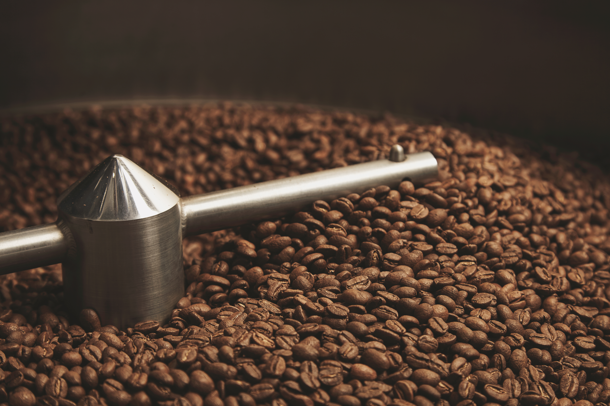
Tostión
Perfiles de tueste personalizados según origen, humedad, variedad y densidad del grano.
No solo cultivamos café, cultivamos una empresa, una historia y un futuro alrededor del café
Descubrir más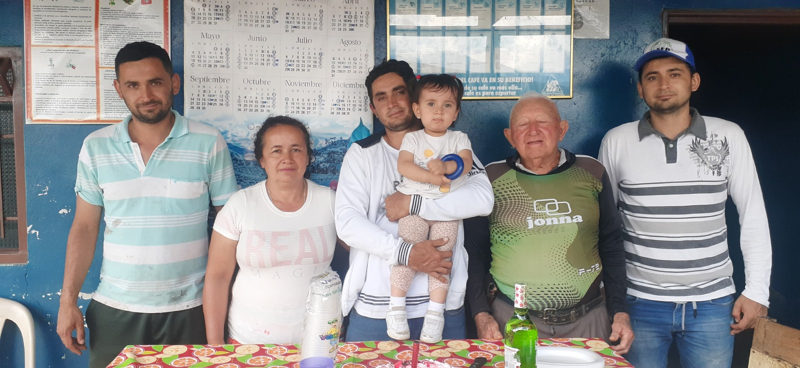
Ofrecemos cafés de especialidad con trazabilidad completa, procesos innovadores y un terroir único que expresa la identidad de nuestra tierra.
Unimos tradición, técnica y tecnología para brindar una taza excepcional, respetando la naturaleza y fortaleciendo la cultura cafetera.
Conocer másDesde la recolección manual hasta el control de calidad, cada etapa garantiza un café excepcional con trazabilidad y un perfil sensorial superior.
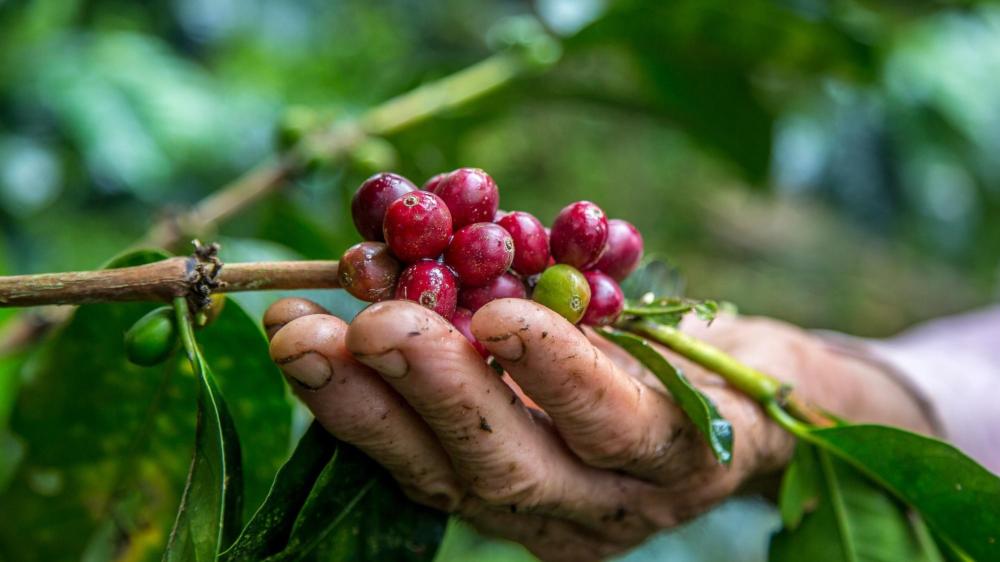
Selección manual de cerezas en su punto óptimo de maduración, realizada por manos expertas para garantizar calidad y consistencia.
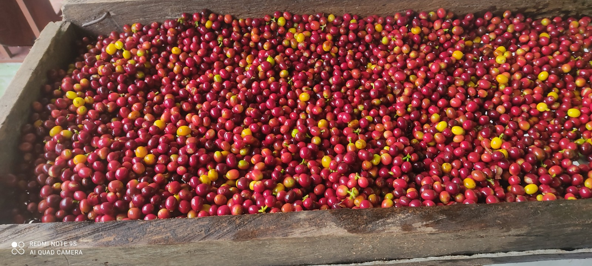
El café es recibido en tolva y pesado cuidadosamente, asegurando control, trazabilidad y registro del proceso.
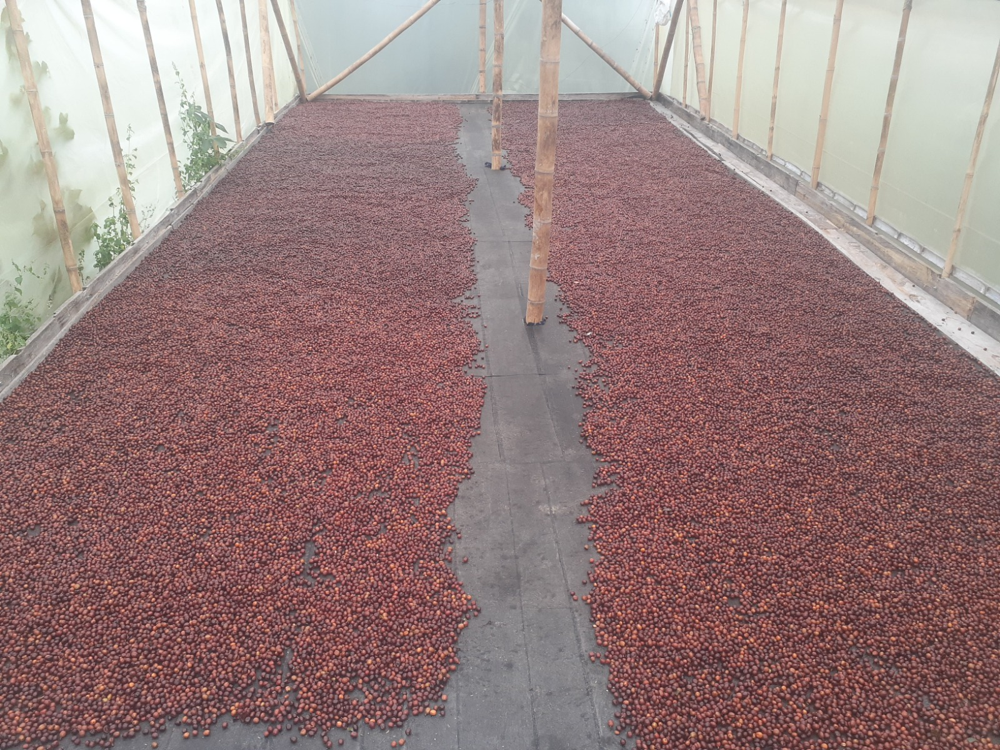
Fermentación en cereza anaeróbica.
Separación de flotes.
Secado.
Empaque y almacenamiento.
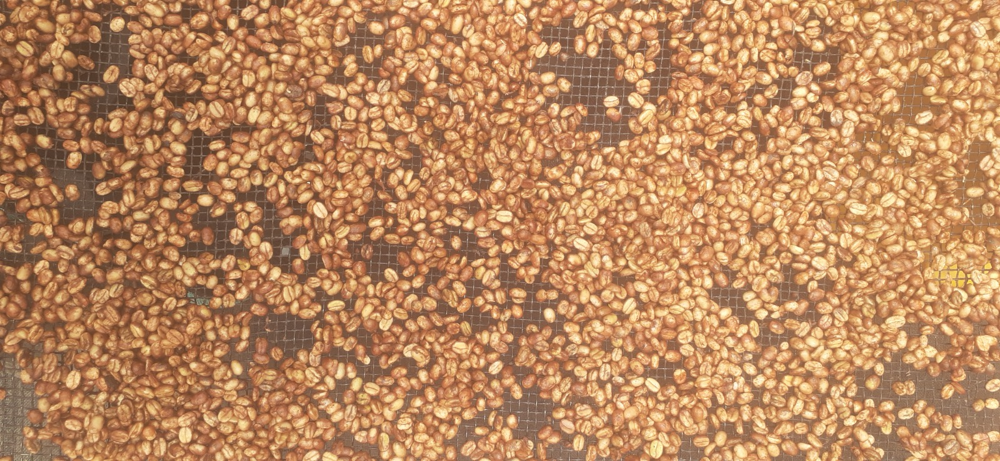
Fermentación anaeróbica en cereza (previa).
Separación de flotes y despulpado.
Fermentación en mucílago anaeróbica.
Secado.
Empaque y almacenamiento.

Fermentación anaeróbica en cereza.
Separación de flotes y despulpado.
Fermentación sumergida.
Lavado.
Secado.
Empaque y almacenamiento.
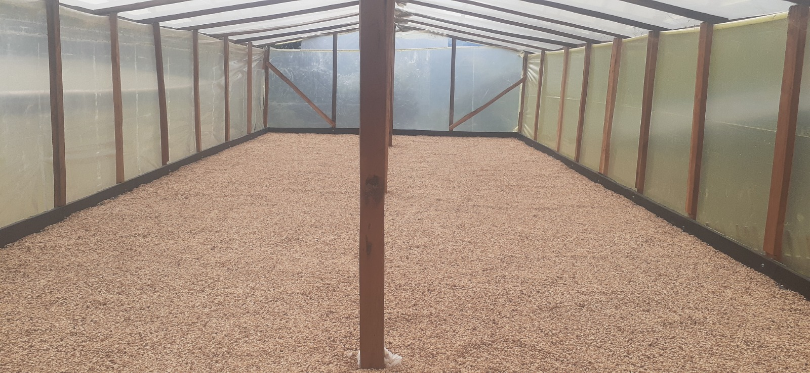
Producto resultante del proceso de secado del café, listo para almacenamiento o comercialización.
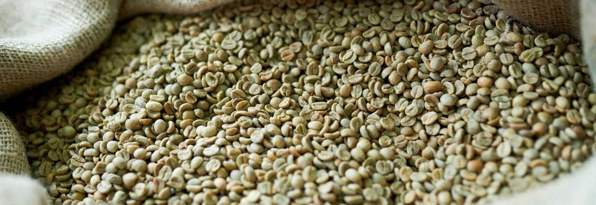
Obtenido a partir de la trilla del café pergamino seco, clasificado según estándares de calidad.
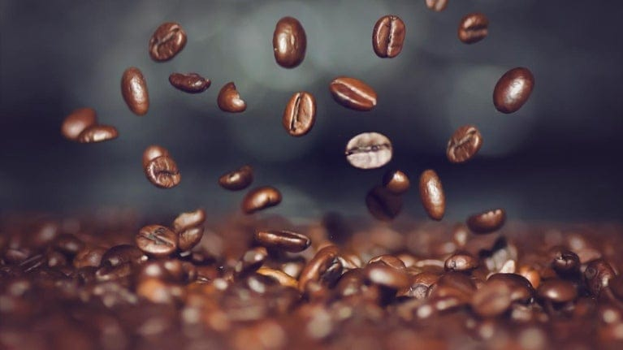
Producto final elaborado mediante procesos de tostión y molienda, listo para el consumo.
Procesamos cafés naturales, honey y lavados, garantizando una transformación precisa del pergamino seco a almendra con estándares industriales controlados.
El proceso protege la integridad del grano, preservando su estructura física y cualidades sensoriales.
Un proceso confiable, controlado y enfocado en la excelencia del café de especialidad.

Perfiles de tueste personalizados según origen, humedad, variedad y densidad del grano.
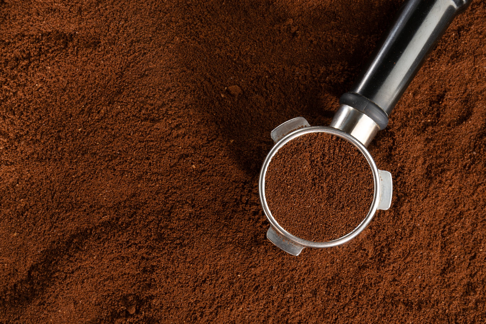
Molienda ajustada a distintos métodos de preparación con consistencia profesional.
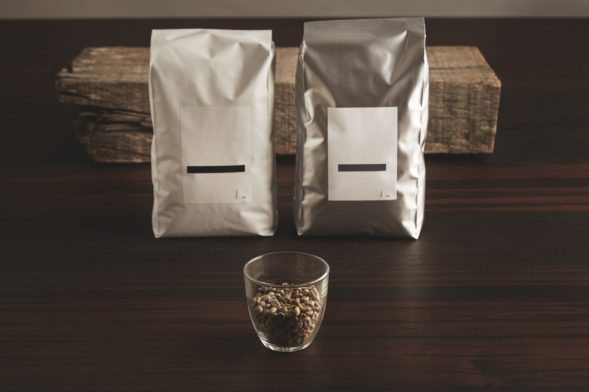
Empaques técnicos que conservan aroma, frescura y propiedades del café.
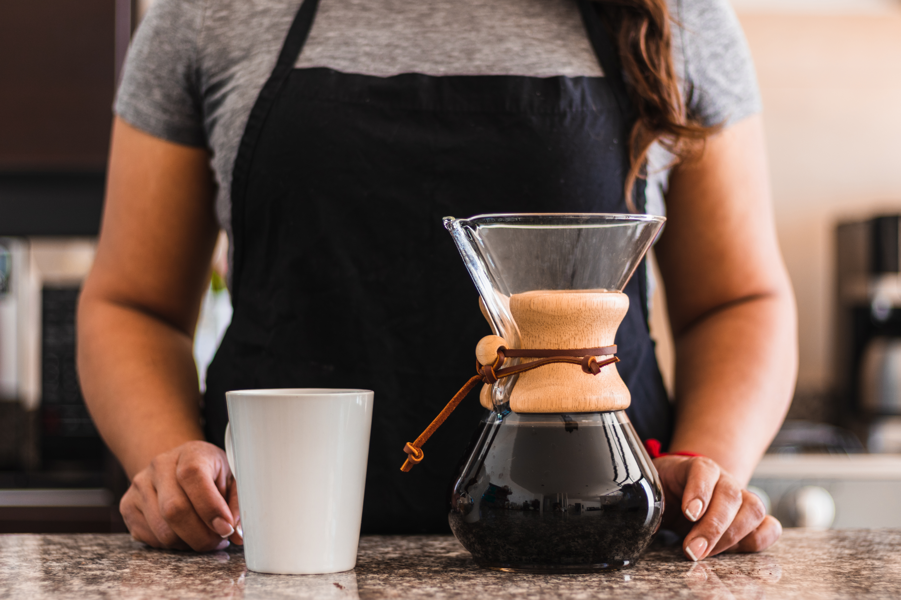
Análisis sensorial profesional para definir perfil, calidad y potencial comercial.